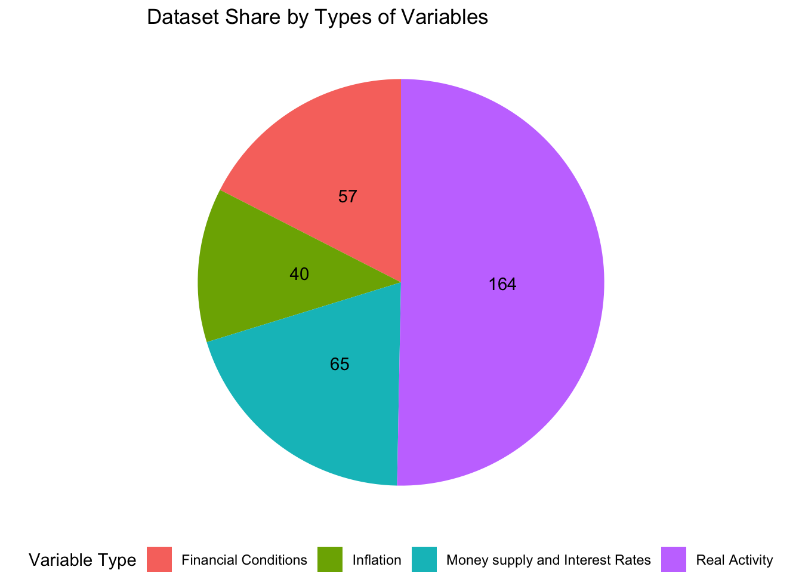
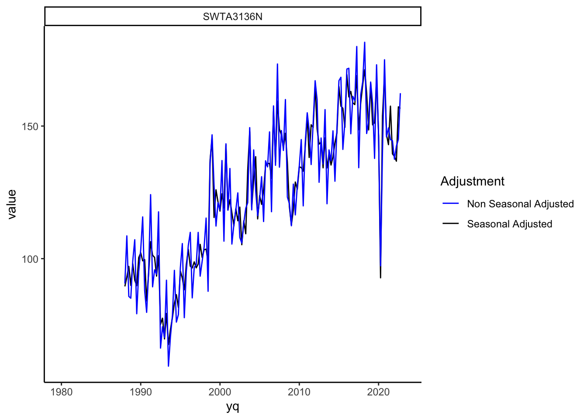
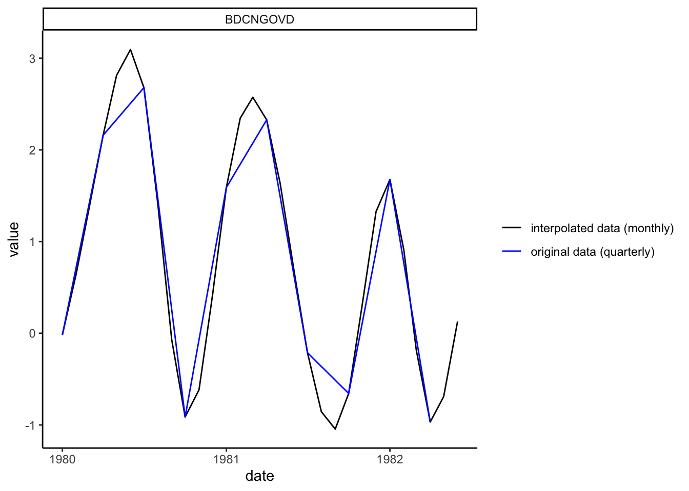
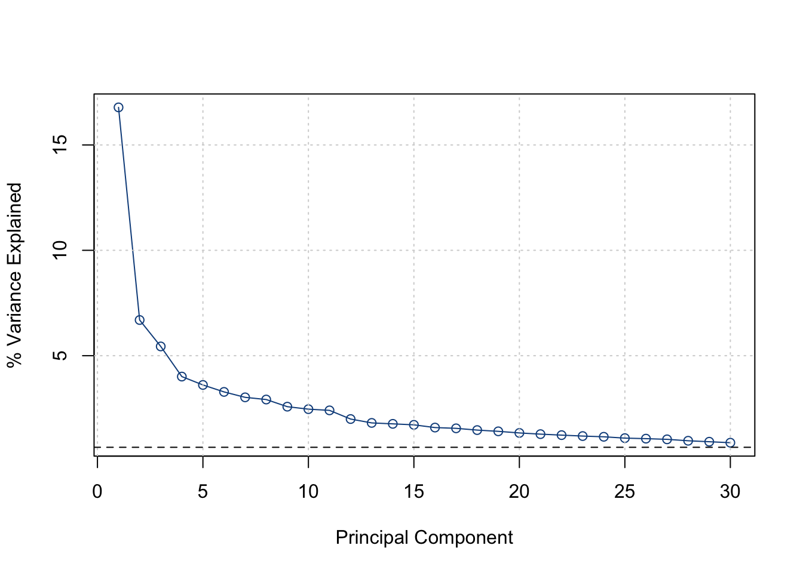
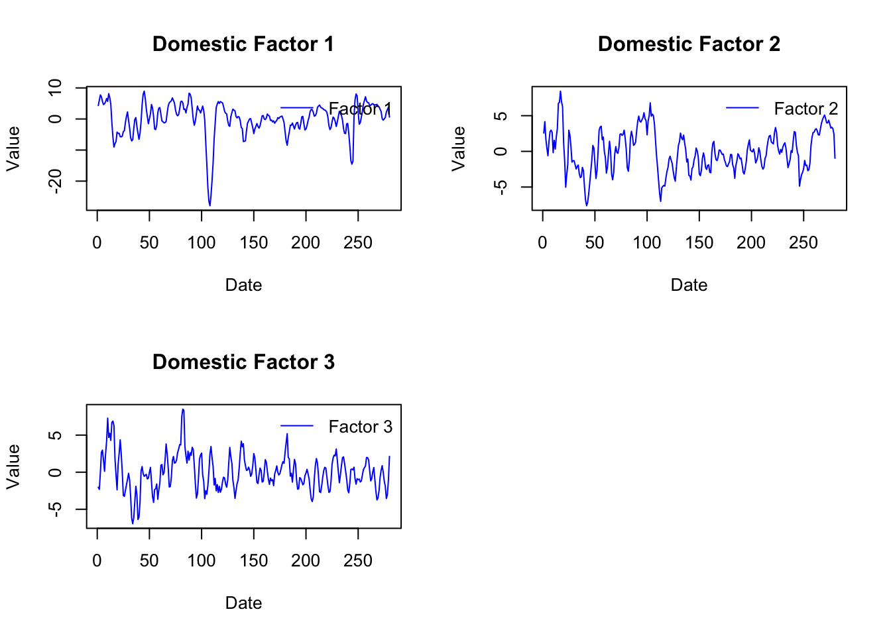
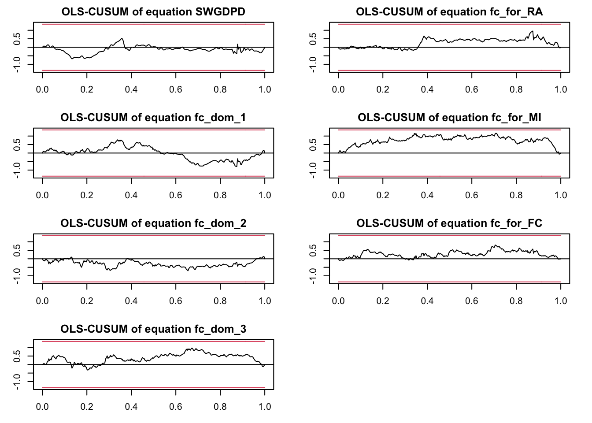
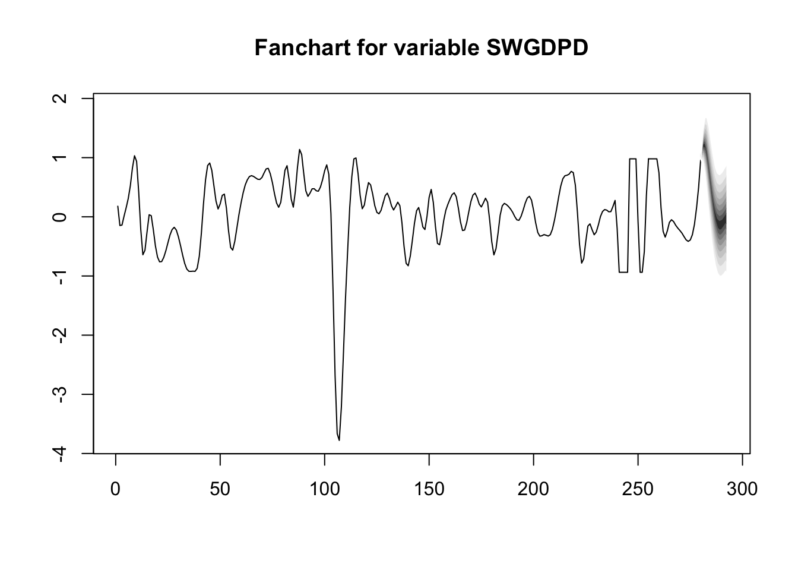

Forecasting a small open economy with a FAVAR in R : Evidence from Switzerland
Framework
Conducted for CREA (Swiss Institute of Applied Macroeconomics of University of Lausanne) and part of my master thesis, we propose a Factor Augmented VAR (FAVAR) à la Bernanke, Boivin, and Eliasz (2005) tailored for a small economy in the spirit of Mumtaz and Surico (2009) to forecast real Swiss GDP growth. We use principal components analysis and expectation-Maximization algorithm to extract factors from a diverse set of a large number of variables with missing values (and different frequencies) and modeled them with the target variable within a VAR framework in a two step estimation approach. Our FAVAR remains structural by dividing the model into two blocks : one for foreign and one for domestic factors. Each block encompasses a real activity, inflation, money supply & interest rates and financial conditions factor, contributing to the model’s economic interpretability. To assess its out-of-sample performance, we compare our FAVAR model to different benchmarks, including univariate and multivariate models, across various forecasting horizons (up to 12 quarters ahead) and over different evaluation sample.
In this post, we aim to outline the key steps in building an advanced forecasting model akin to those used by institutions. We will cover everything from data collection and preparation to the out-of-sample forecasting exercises, providing code snippets to facilitate replication. Our main focus will be on implementing the cutting-edge two-step estimation FAVAR approach in R, which is particularly efficient at handling a large number of variables.
Disclaimer
The author of this work did his internship at the CREA (Swiss Institute of Applied Macroeconomics of University of Lausanne) under the supervision of Mathieu Grobéty and Brendan Berthold. The opinions and assessments herein presented pertain to the author and should not be related to the views of CREA. CREA is not liable in any way for the present paper. The data were retrieved through Datastream at CEDIF (Centre de Documentation et d’Initiation Financière) solely for the purpose of this project : “Forecasting the Swiss Economy,” which is currently pending. Unfortunately, for proprietary reasons, we will not display the dataset.
Dataset
Every data series was collected carefully from Datastream by myself and automated by request at CEDIF for future use and updating. The static data series of each country are in the different static excel files from 1980Q1 to 2023Q3. In total, there are 320 variables (152 quarterly, 154 monthly, 14 daily). The dataset consists of 155 domestic variables from Switzerland and 172 foreign variables that capture foreign economic activity which is relevant for a small-open economy like Switzerland. The foreign variables encompass variables from the main trading partners in Europe, such as Germany, France, Italy and the United Kingdom, as well as other main trading partners such as the United States, China and Japan. Then, our dataset contains 4 types of variables as in Mumtaz and Surico (2009) : real activity data including real GDP, gross value added, industrial production, investment, consumption, exports, imports, employment, vacancies, consumer confidence index, retail sales; inflation data including the main price indices (GDP Deflator, CPI, core inflation, PPI, oil prices); money & interest rates data including money supply M1, M2, M3, banknotes in circulation, sight deposits, saving deposits and the different interest rates (policy rates, discount rates, government bond yields, mortgage lending rates. . . ) and finally financial conditions variables including house prices, stock prices, uncertainty indexes and effective exchange rates. Swiss variables are more granular, with more precise data by industry and sector, in order to better capture accurately the domestic dynamics.
Data Preparation
Packages loading
Firstly, we have to install and load the necessary libraries. We try to limit the use of packages and rely only on the important ones.
packages <- c("tidyverse", "seasonal", "tseries","splines","vars","lmtest","readxl", "missMDA", "lubridate","zoo","forecast","knitr","dfms","xts", "stats","kableExtra")
# `tidyverse` is the most important library in the world, very important for data manipulation, data wrangling, nice plots...
# `lubridate` designed to make working with dates and times easier and more intuitive
# `seasonal`for variables seasonal adjustment using X13-ARIMA SEATS procedure
# `tseries`, `xts`, `zoo` for time series manipulation and unit root tests
# `splines` for piecewise spline cubic interpolation
# `vars` for Vector Auto Regressive estimation and prediction
# `missMDA`for missing values imputation using PCA-EM algorithm
# `readxl` for reading excel files
# `forecast`for ARIMA forecasting and Diebold Mariano tests
# `knitr` and `KableExtra`for creating nice tables in LaTex or HTML
# `stats` for principal components analysis
#function
libraries <- function(packages){
for(package in packages){
#checks if package is installed
if(!require(package, character.only = TRUE)){
#If package does not exist, then it will install
install.packages(package, dependencies = TRUE)
#Loads package
library(package, character.only = TRUE)
}
}
}
#apply the function passing the packages vector as an argument
libraries(packages)Each Excel file corresponds to a country (Switzerland, Japan, Germany, USA, United Kingdom, France, China, Italy). Within each Excel file, each sheet represents a type of variable (Real Activity, Inflation, Money & Interest Rates, and Financial Conditions) with the corresponding frequency. For example “RA_q” refers to Real Activity variables in quarterly frequency. In this next code chunk, we load the different data sets using some loops in order to get every quarterly variables (Real Activity, Inflation, Money and Interest Rates and Financial conditions) of each country in one data frame.
Data loading
countries <- c('Switzerland', 'Japan', 'Germany', 'USA', 'UK', 'France', 'China', 'Italy')
sheets <- c('RA_q', 'INF_q', 'FC_q','MI_q')
# RA_q for Real Activity variables, INF_q for inflation variables, FC_q for financial conditions variables all in quarterly frequency
quarterly_data <- NULL
start_date <- as.Date("1980-01-01") # Start date
end_date <- as.Date("2023-04-01") # End date
dates <- seq(start_date, end_date, by = "quarter") # Generate quarterly dates
quarter_dates <- zoo::as.Date.yearqtr(zoo::as.yearqtr(dates, format = 'Q%q %Y'))
quarterly_aggregate <- data.frame(yq = quarter_dates)
for (country in countries) {
for (sheet in sheets) {
file_path <- paste("data/", country, ".xlsm", sep = "")
# Check if the sheet exists in the Excel file
if (sheet %in% excel_sheets(file_path)) {
sheet_name <- sheet
data <- read_excel(file_path, sheet = sheet_name, skip = 1) %>%
rename(date = Code) %>%
mutate(yq = zoo::as.Date.yearqtr(zoo::as.yearqtr(date, format = 'Q%q %Y'))) %>%
dplyr::select(yq, everything(), -date)
quarterly_aggregate <- full_join(quarterly_aggregate,data, by='yq')
} else {
cat("Sheet", sheet, "does not exist in", country, ".xlsm\n")
}
}
}Sheet INF_q does not exist in Switzerland .xlsm
Sheet MI_q does not exist in Switzerland .xlsm
Sheet FC_q does not exist in Japan .xlsm
Sheet MI_q does not exist in Japan .xlsm
Sheet FC_q does not exist in Germany .xlsm
Sheet MI_q does not exist in Germany .xlsm
Sheet FC_q does not exist in USA .xlsm
Sheet MI_q does not exist in USA .xlsm
Sheet FC_q does not exist in UK .xlsm
Sheet MI_q does not exist in UK .xlsm
Sheet FC_q does not exist in France .xlsm
Sheet MI_q does not exist in France .xlsm
Sheet INF_q does not exist in China .xlsm
Sheet FC_q does not exist in China .xlsm
Sheet MI_q does not exist in China .xlsm
Sheet FC_q does not exist in Italy .xlsm
Sheet MI_q does not exist in Italy .xlsmThen, we load the merging excel file with the corresponding information of each variable (description of the variable, seasonal adjustment, type of variable, country…)
merging.df = readxl::read_excel('data/merging_final.xlsx') %>%
filter(Frequency == 'quarterly') %>%
rename(TickerDatastream=Symbol) %>%
mutate(variable = gsub(" ", "", gsub('[[:punct:] ]+',' ',TickerDatastream))) #R does not understand the "..." in the Ticker Datastream so we get rid of it
quarterly_aggregate = quarterly_aggregate %>%
gather(key = variable, value = value, -yq) %>%
mutate(variable = gsub(" ", "", gsub('[[:punct:] ]+',' ',variable))) %>%
left_join(merging.df, by = 'variable') %>%
mutate(value=as.numeric(value))Seasonal adjustment
Then, the time series not already seasonal adjusted should be seasonal adjusted for the analysis using the X13-ARIMA SEATS procedure used by the Census Bureau and most of the central banks (European Central Bank, Bank of Spain…) . Therefore, the seasonal library is used.
# seasonal adjust the quarterly variables that are not with final(seas(.)) command.
quarterly_aggregate_no_SA = quarterly_aggregate %>%
dplyr::filter(Adj == 'no SA' & variable != 'SWIPCONSH') %>%
group_by(variable) %>%
drop_na(value) %>% # drop the missing values before seasonal adjustment
mutate(value=final(seas(ts(value, frequency = 4, start =c(lubridate::year(yq)[1],1))))) # argument inside final(seas(.)) only possible in ts format (frequency = 4 because of quarterly frequency)
# variables that are already seasonal adjusted
quarterly_aggregate_SA = quarterly_aggregate %>% dplyr::filter(Adj != 'no SA') %>% drop_na(value)
# Re aggregate
quarterly_aggregate_seas = rbind(quarterly_aggregate_no_SA, quarterly_aggregate_SA)In order to check if the seasonal adjustment was correctly done we plot a random seasonal adjusted variable (variable = ‘SWTA3136N’) with ggplot (already loaded in the tidyverse package)
# Plot a quarterly variable (in blue non seasonal adjusted variable and in black seasonal adjusted)
quarterly_aggregate %>%
dplyr::filter(Adj == 'no SA' & variable != 'SWIPCONSH') %>%
rename(value_raw = value) %>%
dplyr::select(yq, variable, value_raw) %>%
left_join(quarterly_aggregate_seas, by = c('yq', 'variable')) %>%
filter(variable == 'SWTA3136N') %>%
ggplot() +
geom_line(aes(x = yq, y = value, color = 'Seasonal Adjusted')) +
geom_line(aes(x = yq, y = value_raw, color = 'Non Seasonal Adjusted')) +
facet_wrap(~variable) +
scale_color_manual(name = "Adjustment",
values = c('Seasonal Adjusted' = "black", 'Non Seasonal Adjusted' = "blue")) +
theme(legend.position = "bottom") +
theme_classic()
Stationarity
Then, each series is transformed to be approximately integrated of order 0 by taking the log-difference. To ensure consistency regardless of their frequencies, all variables have been transformed into quarter-on-quarter growth rates for quarterly variables and 3-month growth rates for monthly variables, i.e in growth rates, except for interest rates and yields.
To check the stationarity of the transformed time series, we apply an augmented Dickey Fuller test with a 10% rejection of the null hypothesis H0. Once a first difference of the level/logarithmic-series applied , a few series were not judged stationary with respect to the unit-root test. In these cases, a second difference of the level/logarithmic-series is applied. We can also apply other unit root/stationarity tests like KPSS or Phillips-Perron test.
is approximated using Swiss real GDP from SECO in level already adjusted for seasonal, calendar and sport event effects. Here, the target variable \(Y_t\) depicts the quarter-on-quarter GDP growth rate corresponding to the change from the previous quarter. It is as defined as :
\[\begin{equation} Y_t = 100 \times \log\left(\frac{Y_t^l}{Y_{t-1}^l}\right) \end{equation}\] with \(Y_t^l\) the real GDP from SECO in level at quarter t and \(Y_{t-1}^l\) at quarter \(t-1\). It is a quarterly variable.
# Apply first log difference on quarterly dataset to make them stationary
quarterly_aggregate_seas = quarterly_aggregate_seas %>% group_by(variable) %>%
mutate(value = (log(value) - log(lag(value)))*100) %>% ungroup()
# Adf test with tseries library
quarterly_aggregate_seas_adf_test = quarterly_aggregate_seas %>%
group_by(variable) %>% na.omit(value) %>% mutate(adf_test_p_value = adf.test(value)$p.value) %>% ungroup()
print(unique(quarterly_aggregate_seas_adf_test$adf_test_p_value)) # p-values overview [1] 0.01000000 0.01442791 0.01859046 0.01962556 0.02173802 0.01584546
[7] 0.01731356 0.01893731 0.03898203 0.05269736 0.01269812 0.02826987
[13] 0.01631024 0.01058451 0.07758065 0.13447386 0.01892127 0.03274027
[19] 0.02248844 0.01349715 0.01115918 0.09133751 0.01261217 0.02157285
[25] 0.15805439 0.40596553 0.07537122 0.01216056 0.02011675 0.08533531
[31] 0.48874411 0.04668052 0.09936814 0.02371349 0.40555079 0.06617781
[37] 0.01779831 0.37969236# Print non stationary variables (p-values higher than O.1)
quarterly_aggregate_seas_adf_test %>% filter(adf_test_p_value > 0.1) %>%
pull(variable) %>%
unique() %>% print()[1] "SWEMPIFSP" "SWEMPFOCP" "SWHP70OCF" "BDGDPIPDE" "FRGDPIPDE" "ITGDPIPDE"A p-value equal or smaller than 0.1 means that we reject the null hypothesis H0 that the time series has a unit root (i.e non stationary). Here, 6 time series are non stationary. Therefore, we apply a differentiation a second time on these variables.
Normalization for PCA
Also, for Principal Components Analysis to work, we need the data to be normalized such that each variable has the same scale. The next chunk scales the data with scale (by default with mean 0 and standard deviation of 1)
# Scale quarterly variables
quarterly_aggregate_seas = quarterly_aggregate_seas %>% group_by(variable) %>%
mutate(value = scale(value)) %>% ungroup()Dealing with missing values
Last but not least, before extracting the factors, we apply PCA-EM algorithm to this dataset - not all variables start from the first quarter of 1980, some of them later. In fact, Stock and Watson (2002) proposed the EM-algorithm as an imputation method to fill in the missing values. We apply the same algorithm, with a slight difference in the first step by adding a cross-validation procedure as in Josse et al. (2012) , also used in Burri and Kaufmann (2020). The MissMDA library is used. In this next code chunk, we apply this revisited EM-algorithm. We also notice that there is 24.8% of missing values in our quarterly data set (especially between 1980 and 2000).
# Get the data frame in wide format and get rid of "yq" (dates) for the EM-algorithm
quarterly_aggregate_seas[,3]<- ifelse(is.nan(quarterly_aggregate_seas$value), NA,quarterly_aggregate_seas$value) # Deal with NaN
quarterly_aggregate_EM <- quarterly_aggregate_seas %>% dplyr::select(yq,variable,value) %>% pivot_wider(names_from=variable, values_from=value) %>% dplyr::select(-yq)
quarterly_aggregate_EM <- as.data.frame(quarterly_aggregate_EM)
# Count the proportion of missing values
missing_count <- colSums(is.na(quarterly_aggregate_EM ))
total_count <- dim(quarterly_aggregate_EM )
cat("Number of missing values:", sum(missing_count), "/", total_count[1]*total_count[2], "\n")Number of missing values: 6411 / 25777 # ----> 24.8% of missing values
##### EM algorithm ######## ----------
# Compute the number of principal components that will be use to impute the data
test_pca <- estim_ncpPCA(quarterly_aggregate_EM,ncp.min = 1, ncp.max = 10, method = "EM")
# Make the imputed data, This is the E-step and M-step
imputated_df <- imputePCA(quarterly_aggregate_EM, ncp = test_pca$ncp,method="EM")
quarterly_aggregate_final <- as.data.frame(imputated_df$completeObs)
#The imputated_df is the object that contains the input data, the estimated data...
#The daframe should look like this (wide format)
# var_1 | var_3 | var_3|
# ------|-------|------|
# 0.34 | 1.7 | 2 |
# ------|-------|------|
# 0.23 | 1.5 | 3.5 |
# ------|-------|------|
# 0.29 | 3 | 5 |
# ------|-------|------|
# 0.90 | -3 | -4 |
# We add back the dates quarterly_aggregate_final and visualize the final dataframe
quarterly_aggregate_final <- cbind(unique(quarterly_aggregate_seas$yq),quarterly_aggregate_final)
colnames(quarterly_aggregate_final)[1] <- "date"
print(head(quarterly_aggregate_final[,1:3], n=4)) date SWCNPERC SWCNGOVC
1 1980-01-01 -0.032482712 -0.2276055
2 1980-04-01 -0.645870306 1.8585853
3 1980-07-01 -0.009509818 0.9343675
4 1980-10-01 0.109959577 0.5837586# print the 4 first observations of the first 2 variablesFinally, quarterly level data are converted into monthly frequency using a shape-preserving piecewise cubic interpolation as in Miranda-Agrippino and Rey (2020) using spline command from the splines library. This step is optional but in our case is required given that the large number of parameters to estimate. It provides us more observations (i.e data points) for the estimation part.
# Perform cubic interpolation for Quarterly Dataset
date_int <- as.Date(quarterly_aggregate_final$date)
month_int <- seq(as.Date("1980-01-01"), as.Date("2023-04-01"), by = "month")
interpolated_data <- data.frame(date = month_int) # Create a new data frame to store interpolated values
# Perform cubic interpolation for Quarterly dataset through a loop
for (i in names(quarterly_aggregate_final)[-1]) {
# Extract values for a specific column
quarterly_final_interpolated <- quarterly_aggregate_final[[i]]
# Cubic spline interpolation for each column
variables_interpolated <- spline(x = date_int, y = quarterly_final_interpolated, xout = month_int, method = "fmm")
#Replace the original column with the interpolated values
interpolated_data[[i]] <- variables_interpolated$y[1:nrow(interpolated_data)]
}
# Interpolated final dataframe interpolated_data
# Checking interpolated data for the first variable of the dataframe and for its 15 first observations
# in blue the variable in quarterly frequency and in black the same variable in monthly frequency
check = quarterly_aggregate_final %>% pivot_longer(cols = -date,names_to = "name",values_to = "value", values_drop_na = TRUE) %>% arrange(name) %>% dplyr::slice(1:10)
interpolated_data %>%
gather(key=key,value=value,-date) %>%
arrange(key) %>%
dplyr::slice(1:30) %>%
ggplot() +
geom_line(aes(x=date,y=value,color = "interpolated data (monthly)")) +
geom_line(data=check, aes(x=date,y=value,color = "original data (quarterly)")) +
scale_color_manual(values = c("interpolated data (monthly)" = "black", "original data (quarterly)" = "blue")) +
facet_wrap(~key,scales='free') + theme_classic() +
guides(color = guide_legend(title = NULL)) # Remove the legend title
Frequency
Note also that many of the series used in this project are not only available at quarterly but only at monthly or daily frequency (mixed frequency series). As said before, we decided to convert all the series to monthly values in order to have high-frequency data with more observations. For temporal aggregation related to daily data, we take the monthly average (replicated in the next code chunk). Thus, in our specification, monthly variables \(x_{i,t}^m\) are defined as the average of daily observations \(x_{i,t}^d\) on the number of days \(N\) of each month : \[x_{i,t}^m = \frac{1}{N}\sum_{t=1}^{N} x_{i,t}^d\]
#.... After loading daily variables in a separate dataframe :
daily_in_monthly = daily_dataframe %>%
group_by(variable, ym = lubridate::floor_date(yd, 'month')) %>% summarise(value = mean(value))The subsequent procedures, such as ensuring stationarity, scaling data and handling missing values, remain consistent with those applied to quarterly variables. However, seasonal adjustment is not always performed since the daily variables in question pertain to financial indices. Naturally, no seasonal pattern in the financial markets is assumed.
Once we have the three different final “clean” data frames in the same frequency we combine them in a single data frame and export the final output in csv.
# Export in csv format (can also be exported in Rdata format)
write_csv(data_final,"data/data_final.csv")FAVAR estimation
FAVAR framework
The FAVAR model was created by Bernanke, Boivin, and Eliasz (2005) as an adaptation of a structural dynamic factor model Stock and Watson (2002) . The FAVAR depicts the dynamics of a small number of estimated factors, which summarize the common information of a large set of variables, together with an observed variable (in our case, the Swiss GDP growth rate : our target to forecast), within a vector autoregressive (VAR) model.
The huge underlying informative set of the FAVAR reduces the omitted variables bias
The FAVAR overcomes the overparametrization issue of the traditional VAR.
Factors models are increasingly used in central banks for macroeconomic forecasting purposes.
Factors extraction
The econometric framework used in this project relies on FAVAR Models as proposed by Bernanke, Boivin, and Eliasz (2005) extended to include international factors in the spirit of Boivin, Giannoni, and Mihov (2009), Mumtaz and Surico (2009) and Vasishtha and Maier (2013). Before proceeding with factor extraction as described above, we first load the data frame from the previous section and perform some final adjustments. These adjustments involve descaling the target variable, reducing the estimation sample to the period from 2000 to 2023 due to multiple structural breaks observed between 1980 and 2000 and removing outliers using a winsorization procedure. Specifically, we apply winsorization at 99% across the entire sample and at 95% during the Covid period to address outliers effectively.
# Load Data and apply some adjustments
data_final <- read.csv("data/data_final.csv")
# Descale the target variable
data_final <- data_final %>% group_by(variable) %>% mutate(value = ifelse(variable=="SWGDPD", scale(value),value)) %>% ungroup()
# Start from 2000-01-01 (structural breaks before)
data_final = data_final %>%
dplyr::filter(ym >= '2000-01-01')
# Extract before winsorisation (FAVAR model) the observed values of the target variable
# It will be useful for forecast errors (Realized Values of the target variable)
Y_observed = data_final %>% group_by(variable) %>% filter(variable=="SWGDPD") %>%
dplyr::select(everything(),-Variable,-TickerDatastream,-Frequency,-Start,-Adj,-Type,-Country) %>% pivot_wider(names_from = variable, values_from = value)
# First Winsorization at 1% on the entire sample
data_final = data_final %>%
dplyr::filter(ym >= '2000-01-01') %>%
group_by(variable) %>%
mutate(value = case_when(value >= quantile(value,0.99) ~ quantile(value,0.99),
value <= quantile(value,0.01) ~ quantile(value,0.01),
TRUE ~ value))
# Second Winsorization at 5% on the Covid period only
data_final = data_final %>%
dplyr::filter(ym >= '2000-01-01') %>%
group_by(variable) %>%
mutate(value = ifelse(ym >= '2020-01-01',
case_when(value >= quantile(value, 0.95) ~ quantile(value, 0.95),
value <= quantile(value, 0.05) ~ quantile(value, 0.05),
TRUE ~ value),
value))The model includes two blocks of factors; one for Switzerland (named domestic block) and one for the rest of world (named foreign block), extracted respectively from large sets of Swiss and international time series. The latter refer to economic variables from the main trading partners of Switzerland and having the weight to impact Swiss economy (UK, Italy, USA, China, France, Germany, Japan).
The measurement equation is :
\[\begin{eqnarray} \begin{pmatrix} X_{t}^{H} \\ X_{t}^{*} \end{pmatrix} = \begin{pmatrix} \Lambda_{11}^{H} & \Lambda_{12}^{*} \\ 0 & \Lambda_{22}^{*} \end{pmatrix} \begin{pmatrix} F_{t}^{H} \\ F_{t}^{*} \end{pmatrix} + \begin{pmatrix} \Lambda_{1}^{Y} \\ 0 \end{pmatrix} Y_{t} + \begin{pmatrix} v_{t}^{H} \\ v_{t}^{*} \end{pmatrix} \label{Eq_measurement} \end{eqnarray}\]where domestic and foreign observational time series: \(X_{t}=[X_{t}^{H},X_{t}^{*}]\) and domestic and foreign unobserved factors: \(F_{t}=[F_{t}^{H},F_{t}^{*}]\). \(v_t \sim \mathcal{N}(0, \Sigma)\) is a vector of reduced form errors.
As you notice in the measurement equation, we allow the domestic observed variables to load on both domestic and foreign factors as well as target variable \(Y_t\), whereas foreign variables only load on foreign factors like in Kamber et al. (2016) and following our small open economy framework.
In the next code chunk, we extract the foreign factors using the prcomp command by selecting the first principal component of each type of foreign variable (Real Activity, Inflation, Money and Interest Rates, and Financial Conditions), which explains the majority of the total variance in the associated data set. This process is straightforward because foreign variables only load onto foreign factors. The summary command displays the total variance explained by the first principal component.
## Extraction foreign factor (Real activity)
foreign_RA <- data_final %>% filter(Type=="RA") %>% filter(Country!= "Switzerland") # Filter foreign Real Activity Variables
foreign_RA <- foreign_RA %>% group_by(variable) %>% dplyr::select(everything(),-Variable,-TickerDatastream,-Frequency,-Start,-Adj,-Type,-Country) %>% pivot_wider(names_from = variable, values_from = value) # Wide format
foreign_RA <- foreign_RA[,-1] # Get rid of the date column
pc_foreign_RA <- prcomp(foreign_RA,center = FALSE, scale. = FALSE, rank.=1) # already scaled
summary(pc_foreign_RA) # Total Variance explained by the first principal componentImportance of first k=1 (out of 53) components:
PC1
Standard deviation 2.5531
Proportion of Variance 0.2716
Cumulative Proportion 0.2716## Extraction foreign factor (Inflation)
foreign_INF <- data_final %>% filter(Type=="RA") %>% filter(Country!= "Switzerland") # Filter foreign Inflation Variables
foreign_INF <- foreign_INF %>% group_by(variable) %>% dplyr::select(everything(),-Variable,-TickerDatastream,-Frequency,-Start,-Adj,-Type,-Country) %>% pivot_wider(names_from = variable, values_from = value) #Wide format
foreign_INF <- foreign_INF[,-1] # Get rid of the date column
pc_foreign_INF <- prcomp(foreign_INF,center = FALSE, scale. = FALSE, rank.=1) # already scaled
summary(pc_foreign_INF) # Total Variance explained by the first principal componentImportance of first k=1 (out of 53) components:
PC1
Standard deviation 2.5531
Proportion of Variance 0.2716
Cumulative Proportion 0.2716## Extraction foreign factor (Money and Interest Rates)
foreign_MI <- data_final %>% filter(Type=="MI") %>% filter(Country!= "Switzerland") # Filter foreign Money and Interest Rates Variables
foreign_MI <- foreign_MI %>% group_by(variable) %>% dplyr::select(everything(),-Variable,-TickerDatastream,-Frequency,-Start,-Adj,-Type,-Country) %>% pivot_wider(names_from = variable, values_from = value) #Wide format
foreign_MI <- foreign_MI[,-1] # Get rid of the date column
pc_foreign_MI <- prcomp(foreign_MI,center = FALSE, scale. = FALSE, rank.=1) # already scaled
summary(pc_foreign_MI) # Total Variance explained by the first principal componentImportance of first k=1 (out of 46) components:
PC1
Standard deviation 2.1147
Proportion of Variance 0.2163
Cumulative Proportion 0.2163## Extraction foreign factor (Financial conditions)
foreign_FC <- data_final %>% filter(Type=="FC") %>% filter(Country!= "Switzerland") # Filter foreign Financial conditions Variables
foreign_FC <- foreign_FC %>% group_by(variable) %>% dplyr::select(everything(),-Variable,-TickerDatastream,-Frequency,-Start,-Adj,-Type,-Country) %>% pivot_wider(names_from = variable, values_from = value) #Wide format
foreign_FC <- foreign_FC[,-1] # Get rid of the date column
pc_foreign_FC <- prcomp(foreign_FC,center = FALSE, scale. = FALSE, rank.=1) # already scaled
summary(pc_foreign_FC) # Total Variance explained by the first principal componentImportance of first k=1 (out of 41) components:
PC1
Standard deviation 3.1674
Proportion of Variance 0.3286
Cumulative Proportion 0.3286Now let’s extract domestic factors. It is not as straightforward as with foreign factors because domestic variables load on domestic factors, foreign factors and on the target variable (\(Y_t\)), i.e the Swiss GDP growth rate. Therefore, with an iteration procedure like in Boivin, Giannoni, and Mihov (2009), we remove what we explain by foreign factor and \(Y_t\) . By simplicity, we do not extract the first principal component of the domestic variables for each type (Real Activity, Inflation, Money and Interest rates and Financial Conditions) but the first 4 principal components on all Swiss variables in the spirit Boivin, Giannoni, and Mihov (2009). We also perform the test proposed by Bai and Ng (2002) in order to determine the optimal number of factors \(r^*\). According to the second criteria \(IC_2\), the optimal number is 8 but 3 factors should be fineto capture most of the information if we rely on the screeplot below.
# filter all Swiss variables
Xdom <- data_final %>% filter(Country== 'Switzerland') %>%
dplyr::select(-Variable,-TickerDatastream,-Frequency,-Start,-Adj,-Type,-Country) %>% pivot_wider(names_from = variable, values_from = value) %>% dplyr::select(-ym)
# filter the target variable
SWGDP <- data_final %>% filter(variable== 'SWGDPD') %>%
dplyr::select(-Variable,-TickerDatastream,-Frequency,-Start,-Adj,-Type,-Country) %>% pivot_wider(names_from = variable, values_from = value) %>% dplyr::select(-ym)
bai_and_ng_optimal_factors <- ICr(Xdom) # Determine the optimal number of factors with Bai and Ng criterie
screeplot(bai_and_ng_optimal_factors ) # Visualization inspection (screeplot)
## Remove by iteration (like in Boivin) the foreign and $Y_t$ part from the domestic variables space (50 iterations like in Burri (2020))
# Initialize Xresid matrix (residuals matrix)
Xresid <- Xdom
rep = 50 # number of iterations
fc_dom <- prcomp(Xdom, rank=3) # Estimate the 3 first principal components on Swiss variables
# Start the iteration
for(n in 1:rep){
for(i in 1:dim(Xdom)[2]){
# Estimate residuals in domestic variables
Data <- data.frame(Xdom[,i], pc_foreign_RA$x,pc_foreign_INF$x,pc_foreign_MI$x,pc_foreign_FC$x,SWGDP,fc_dom$x[,1],fc_dom$x[,2],fc_dom$x[,3])
colnames(Data) <- c("x", "fc_for_RA","fc_for_INF","fc_for_MI","fc_for_FC", "GDP","fc_dom_1","fc_dom_2","fc_dom_3")
Reg <- lm(x~fc_for_RA +fc_for_INF + fc_for_MI + fc_for_FC + GDP + fc_dom_1 + fc_dom_2 + fc_dom_3 , data = Data)
Xresid[,i] <- Data$x - Reg$coefficients[1] - Reg$coefficients[2]*Data$fc_for_RA - Reg$coefficients[4]*Data$fc_for_MI - Reg$coefficients[5]*Data$fc_for_FC - Reg$coefficients[6]*Data$GDP
# Remove foreign inflation factor because of multicolinearity found
}
PCdom <- prcomp(Xresid,rank= 3)
fc_dom$x[,1] <- PCdom$x[,1]
fc_dom$x[,2] <- PCdom$x[,2]
fc_dom$x[,3] <- PCdom$x[,3]
}
fc_dom <- data.frame(fc_dom$x[,1],fc_dom$x[,2],fc_dom$x[,3])
colnames(fc_dom) <- c("fc_dom_1","fc_dom_2","fc_dom_3") # Domestic factors We can plot our 3 domestic factors.
# Create a sequence of dates
dates <- seq(as.Date("2000-01-01"), by = "1 month", length.out = nrow(fc_dom))
# Create the xts object with the principal components and the dates
ts_dom_fc <- xts(fc_dom, order.by = dates)
# Set up the plotting layout to display three plots in two rows
par(mfrow = c(2, 2))
# Plot each factor separately
for (i in 1:3) {
# Create a new plot for each factor
plot <- ts.plot(ts_dom_fc[, i], gpars = list(col = "blue"), type = "l", lty = 1,
main = paste("Domestic Factor", i), xlab = "Date", ylab = "Value")
# Add legend for each plot
legend("topright", legend = paste("Factor", i), col = "blue", lty = 1, bty = "n")
}
VAR Modeling
Then, for the second step of the estimation, we can model our factors estimated by Principal Components along with the target variable to forecast within a VAR framework with Ordinary Least Squares (OLS). This can be estimated equation by equation with the vars library. The VAR transition equation is the following :
with \(u_t \sim \mathcal{N} (0, \Omega)\) a vector of reduced form errors.
As you can see, we exploit the fact that Switzerland is a small open economy in the transition equation (restricted VAR model) where foreign factors have an impact on domestic factors and the Swiss target variable but are not governed by them. However, we do not put restrictions on our VAR matrix because the domestic factors are orthogonal to the foreign factors by construction (first step of the estimation). Thus, foreign factors are not affected by domestic factors.
In scalar form, the variable we wish to forecast follows the following dynamics:\[y_{i,t+h} = C_{1} + \phi_{11}(L)y_{i,t} + \phi_{12}(L)F^H_{t} + \phi_{13}(L) F_t^F + e_{1t}\]
VAR_data <- cbind(SWGDP,fc_dom,pc_foreign_RA$x,pc_foreign_MI$x,pc_foreign_FC$x) # load the extracted factors in step 1 along with the target variable SWGDP, note that fc_dom contains already our 3 domestic factors.
# Rename the columns
colnames(VAR_data) <- c("SWGDPD", "fc_dom_1", "fc_dom_2","fc_dom_3","fc_for_RA","fc_for_MI","fc_for_FC")Once we have a data frame with the target and the domestic and foreign factors, we need to select the optimal number of lags. There are different criteria from which we can choose. We choose the most parsimonious one the \(SC_n\) criteria (the third one in VARselect).
vars::VARselect(VAR_data)$selection
AIC(n) HQ(n) SC(n) FPE(n)
9 4 2 6
$criteria
1 2 3 4 5
AIC(n) -1.1551333 -4.20643370 -4.728889582 -5.387756672 -5.510733408
HQ(n) -0.8554359 -3.64450110 -3.904721776 -4.301353655 -4.162095180
SC(n) -0.4087940 -2.80704738 -2.676456316 -2.682276459 -2.152206246
FPE(n) 0.3150538 0.01491136 0.008858703 0.004598919 0.004088602
6 7 8 9 10
AIC(n) -5.650838744 -5.619230426 -5.660116437 -5.663729622 -5.526804178
HQ(n) -4.039965305 -3.746121776 -3.524772576 -3.266150550 -2.866989896
SC(n) -1.639264634 -0.954609368 -0.342448431 0.306985332 1.096957724
FPE(n) 0.003582494 0.003738881 0.003642824 0.003700104 0.004347118opt.lags = vars::VARselect(VAR_data)Let’s say we choose the \(SC_n\) criterion that suggests that the optimal lag is equal to 2.
We can now estimate the model using the function VAR from the package vars.
FAVAR = vars::VAR(VAR_data, p= opt.lags$selection[3], type = "const")
summary(FAVAR)$varresult[[1]] # First equation of the FAVAR
Call:
lm(formula = y ~ -1 + ., data = datamat)
Residuals:
Min 1Q Median 3Q Max
-0.98029 -0.08064 0.00529 0.07972 1.83765
Coefficients:
Estimate Std. Error t value Pr(>|t|)
SWGDPD.l1 1.605292 0.062618 25.636 <2e-16 ***
fc_dom_1.l1 0.002676 0.009969 0.268 0.7886
fc_dom_2.l1 0.015280 0.013500 1.132 0.2587
fc_dom_3.l1 0.014359 0.012031 1.193 0.2338
fc_for_RA.l1 0.040296 0.019765 2.039 0.0425 *
fc_for_MI.l1 0.001309 0.014152 0.093 0.9264
fc_for_FC.l1 -0.002505 0.006769 -0.370 0.7117
SWGDPD.l2 -0.822950 0.062079 -13.257 <2e-16 ***
fc_dom_1.l2 -0.002673 0.010192 -0.262 0.7933
fc_dom_2.l2 -0.014770 0.013032 -1.133 0.2581
fc_dom_3.l2 -0.010139 0.011856 -0.855 0.3932
fc_for_RA.l2 -0.057014 0.019286 -2.956 0.0034 **
fc_for_MI.l2 0.010646 0.014143 0.753 0.4523
fc_for_FC.l2 -0.005369 0.006491 -0.827 0.4090
const 0.019654 0.013390 1.468 0.1433
---
Signif. codes: 0 '***' 0.001 '**' 0.01 '*' 0.05 '.' 0.1 ' ' 1
Residual standard error: 0.2005 on 263 degrees of freedom
Multiple R-squared: 0.9152, Adjusted R-squared: 0.9107
F-statistic: 202.8 on 14 and 263 DF, p-value: < 2.2e-16Diagnostic checks
We also carry out a battery of diagnostic checks
- Invertibility and Stationarity of the FAVAR
All the roots lie inside the unit circle. Therefore, the FAVAR is stationary and invertible. Covariance stationarity is an important property for representation, estimation and inference.
roots(FAVAR) [1] 0.9280405 0.9280405 0.8413460 0.8413460 0.8325475 0.8325475 0.8232638
[8] 0.7363609 0.7363609 0.6965668 0.6905134 0.6905134 0.3731820 0.1345483Structural Breaks
We also perform an OLS-CUSUM test (structural break test) suggesting that there is parameter instability if the cumulative sum of the recursive residuals breaks one of the two boundaries in red in the graph below. The test is performed for each equation of our FAVAR model. There was parameter instability in the old sample (1980-2023). That’s why we reduced the estimation sample (from 2000 to 2023 now).
par(mfrow = c(3, 3))
par(mar = c(3, 3, 2, 2))
stability_test <- stability(FAVAR,type = c("OLS-CUSUM"))
plot(stability_test)
- Test of residuals
We also do some tests on residuals
-Arch Test detects volatility clustering by examining the autocorrelation of squared residuals in a time series model.
-Normality test assesses if residuals follow a normal distribution
-Serial test checks for correlation between residuals at different lags in a time series model.
Result : We reject at 1% the null hypothesis of all these tests meaning firstly that there is significant evidence of conditional heteroskedasticity in the data. In other words, it suggests that the variance of the errors is not constant over time and there are patterns or clusters of volatility in the data (ARCH effects) but also that the residuals are not normally distributed and auto correlated.
#Arch Test
arch.test(FAVAR,multivariate.only = TRUE)
ARCH (multivariate)
data: Residuals of VAR object FAVAR
Chi-squared = 4795.1, df = 3920, p-value < 2.2e-16# Normality test
normality.test(FAVAR, multivariate.only = TRUE)$JB
JB-Test (multivariate)
data: Residuals of VAR object FAVAR
Chi-squared = 11594, df = 14, p-value < 2.2e-16
$Skewness
Skewness only (multivariate)
data: Residuals of VAR object FAVAR
Chi-squared = 184.37, df = 7, p-value < 2.2e-16
$Kurtosis
Kurtosis only (multivariate)
data: Residuals of VAR object FAVAR
Chi-squared = 11410, df = 7, p-value < 2.2e-16# Serial correlation test
serial.test(FAVAR)
Portmanteau Test (asymptotic)
data: Residuals of VAR object FAVAR
Chi-squared = 1178.1, df = 686, p-value < 2.2e-16Fanchart
The package vars provides a variety of tools to analyse and represent the results graphically. For example, the fanchart command provides a graphical representation of the forecasts and their confidence intervals. We illustrate it with a short forecast 4 quarters ahead (12 steps ahead as data are in monthly frequency).
FAVAR_prediction = predict(FAVAR,n.ahead=12)
vars::fanchart(FAVAR_prediction, names = "SWGDPD") # Swiss GDP is winsorized during the Covid period
Pseudo Out-of-sample evaluation
Our unconditional forecasts (i.e the optimal \(h\)-step ahead forecasts) can be rewritten as :
\[\begin{eqnarray} \mathbb{E} \begin{pmatrix} Y_{t+h} \\ F_{t+h} \end{pmatrix} = \sum_{j=1}^{2} \Phi_j %%% \begin{pmatrix} Y^*_{{t-j+h}\vert t} \\ F^*_{{t-j+h} \vert t} \end{pmatrix} \label{fcst_uncond} \end{eqnarray}\]
where \(Y^*_{t-j+h\vert t}=Y_{t-j+h}\) and \(F^*_{t-j+h\vert t}=F_{t-j+h}\) for \(h \leq j\)
Using equation this equation, we can forecast the Swiss GDP growth rate in Switzerland for any horizon from 1 (one quarter ahead) to 12 (twelve quarters ahead).
Then, in order to assess the performance of our model, we conduct a pseudo out-of-sample forecast evaluation exercise where the models’ accuracy in predicting Swiss GDP growth is assessed recursively. Indeed, in order to assess the predictive accuracy of our FAVAR model regarding Swiss GDP growth, out-of-sample forecasts are produced each quarter for the period between 2010Q1 and 2023Q2 (evaluation sample). As in Diebold and Mariano (1995) , we denote \(T\) as the length of the whole sample with \(t\) ranging from 1 to \(T\) (from \(2000Q1\) to \(2023Q2\)), \(R\) (\(2010Q1\)) denotes the start of our evaluation sample (where \(R < T\)) and \(h\) the horizon in quarter (from \(h=1\) to \(h=12\)). The first step consists in estimating our sample (from \(1\) to \(R\)). At time \(R\), forecast is calculated for horizon 1 to 12, using equation of the unconditional forecast show above. Then, at time \(R+1\), new information allows the model to be updated and re-estimated and forecasts for horizons one to 12 are calculated using the revised model. Using new data available at \(R + t\), the model is updated and reestimated till the end of the sample minus the horizon. In practice, as we use monthly frequency data, we produce forecasts for Swiss GDP growth rate at the three, six, nine and twelve months horizon (\(t+h\)), then we continue by updating the estimation sample by adding one quarter (i.e three months). With this recursive technique, the sample size grows over time. It is considered as the best technique in absence of structural breaks in the sample. Additionally, the size of the training data sample (or estimation sample) from 2000Q1 and 2010Q1 is sufficient to produce stable estimation results. Note that factors are estimated over the full sample and not reestimated at each period primarily due to computational considerations.
Mean squared forecast errors
Using all the past notation, squared forecast errors can be computed from \(R+1\) for each horizon in order to evaluate the accuracy of the model, namely:
\[e_{t,h}^2 = (y_{t+h} - \widehat{y}_{t+h \vert t})^2 \]where \(y_{t+h}\) is the realized value of target variable and \(\widehat{y}_{t+h \vert t}\) the forecast of the target variable made in time \(t\) for horizon \(h\).
Then, Mean Squared Forecast Errors (MSFE) are computed as follow :
\[\begin{eqnarray} MSFE_h = \frac{1}{P} \sum_{t=R}^{T-h} e_{t,h}^2 \end{eqnarray}\]
where \(P=T-h-R+1\).
Therefore, in order to compute the performance of our model relatively to the six benchmarks, we compute the ratio of the relative MSFE, which is defined as :
\[\begin{eqnarray}\frac{MSFE_h}{MSFE_{benchmark,h}}\end{eqnarray}\]
When the MSFE ratio is smaller than one, it indicates that our model outperforms the benchmark. Conversely, when the ratio is larger than one, the benchmark performs better than our model
Now, let’s produce a table computing the relative ratio of mean squared forecast errors over several horizons thanks to our homemade function implemented below. Thus function will allow us to compute the relative MSFE over 12 steps ahead (12 quarters ahead) relative to the traditional univariate ARMA(p,q,d) benchmarks. Note that our evaluation sample here starts at 2010M1 (first date = 121 ).
#function relative MSFE table over 12 horizons
Y_observed <- as.ts(Y_observed[,2]) # Our true values realized values of Swiss GDP growth rate from the beginning (without covid adjustment) -> convert to time series (ts object)
relative_msfe_favar <- function(observed.target, var.dataframe, h = 36, T = nrow(var.dataframe), first_date = 121, p_arima = 1, d_arima = 0, q_arima = 0, p_favar = 2) {
# first date is 2010M1, the start of our evaluation sample
ratio.table <- numeric(h/3)
e1 <- NULL # Initialization of the matrix of forecast errors of ARIMA
e2 <- NULL # Initialization of the matrix of forecast errors of FAVAR
for (h_value in seq(3, h, by = 3)) { # Iterate over the h horizons provided
for (i in seq(from = first_date, to = (T - h_value), by = 3)) { # Start of the sequence of forecast errors for each horizon
# Estimation of the ARIMA (recursive scheme)
estim.model.arima <- arima(var.dataframe$SWGDPD[1:i], order = c(p_arima, d_arima, q_arima))
# Estimation of the FAVAR (recursive scheme)
estim.model.favar <- VAR(var.dataframe[1:i, ], p = p_favar)
# Sequence of forecast errors for horizon h for the ARIMA
e1 <- c(e1, (observed.target[i + h_value] - predict(estim.model.arima, n.ahead = h_value)$pred[h_value])^2)
# Sequence of forecast errors for horizon h for the FAVAR
e2 <- c(e2, (observed.target[i + h_value] - predict(estim.model.favar, n.ahead = h_value)$fcst$SWGDPD[h_value, 1])^2)
}
# Ratio of relative MSFE per horizon
ratio_per_h <- mean(e2) / mean(e1)
ratio.table[h_value/3] <- ratio_per_h # Construction of the table
}
result_relative_msfe_table <- data.frame('Horizon' = seq(1, 12), 'Ratio' = ratio.table)
return(kableExtra::kbl(result_relative_msfe_table, align= "c", caption = "Ratio of MSFE", format = "html",booktabs= TRUE, digits = 2) %>% kableExtra::kable_styling("hover",full_width = T))
}
# MSFE ratio table with a simple AR(1) process
table <- relative_msfe_favar(observed.target = Y_observed,
var.dataframe = VAR_data,
h = 36,
T = nrow(VAR_data),
first_date = 121,
p_arima = 1,
d_arima = 0,
q_arima = 0,
p_favar = 2)
table| Horizon | Ratio |
|---|---|
| 1 | 0.88 |
| 2 | 0.90 |
| 3 | 0.94 |
| 4 | 0.94 |
| 5 | 0.95 |
| 6 | 0.96 |
| 7 | 0.97 |
| 8 | 0.97 |
| 9 | 0.97 |
| 10 | 0.98 |
| 11 | 0.98 |
| 12 | 0.98 |
When comparing our FAVAR model with a simple AR(1) process, represented by an ARMA(1,0,0) model, we observe that our FAVAR model outperforms this benchmark across all forecasting horizons (from 1 to 12 quarters). This superiority is indicated by the fact that the ratio of mean squared forecast error (MSFE) between the FAVAR model and the AR(1) process is consistently smaller than 1 over all horizons.
Additionally, to validate the robustness of our FAVAR model, we can conduct further comparisons with alternative ARMA(p,q,d) processes and other multivariate benchmark models such as VAR models with selected leading macro indicators, FAVAR models without foreign blocks or Bayesian VAR (BVAR) models on different evaluation samples (Covid excluded, only before Covid…). These comparisons will provide deeper insights into the relative forecasting performance of our FAVAR model against various alternative modeling approaches.
We can also compute other indicators of performance such as :
RMSE: Root Mean Squared Error
MAE: Mean Absolute Error
MPE: Mean Percentage Error
MAPE: Mean Absolute Percentage Error
MASE: Mean Absolute Scaled Error
It can be can very easily with the package forecast command accuracy .
It can be also interesting to perform some Diebold Mariano test (dm-test) on different horizons so as to assess whether the two models have significantly different accuracy [with the help of the dm-test command from the forecast library].
References
Bernanke, Ben S, Jean Boivin, and Piotr Eliasz. 2005. “Measuring the Effects of Monetary Policy: A Factor-Augmented Vector Autoregressive (FAVAR) Approach.” The Quarterly Journal of Economics 120 (1): 387–422.
Boivin, Jean, Marc P Giannoni, and Ilian Mihov. 2009. “Sticky Prices and Monetary Policy: Evidence from Disaggregated US Data.” American Economic Review 99 (1): 350–84.
Burri, Marc, and Daniel Kaufmann. 2020. “A Daily Fever Curve for the Swiss Economy.” Swiss Journal of Economics and Statistics 156: 1–11.
Diebold, Francis X, and Roberto S Mariano. 1995. “Com Paring Predictive Accu Racy.” Journal of Business and Economic Statistics 13 (3): 253–63.
Josse, Julie, Marie Chavent, Benot Liquet, and François Husson. 2012. “Handling Missing Values with Regularized Iterative Multiple Correspondence Analysis.” Journal of Classification 29: 91–116.
Kamber, Güneş, Özer Karagedikli, Michael Ryan, et al. 2016. “International Spill-Overs of Uncertainty Shocks: Evidence from a FAVAR.”
Miranda-Agrippino, Silvia, and Hélene Rey. 2020. “US Monetary Policy and the Global Financial Cycle.” The Review of Economic Studies 87 (6): 2754–76.
Mumtaz, Haroon, and Paolo Surico. 2009. “The Transmission of International Shocks: A Factor-Augmented VAR Approach.” Journal of Money, Credit and Banking 41: 71–100.
Stock, James H, and Mark W Watson. 2002. “Forecasting Using Principal Components from a Large Number of Predictors.” Journal of the American Statistical Association 97 (460): 1167–79.
Vasishtha, Garima, and Philipp Maier. 2013. “The Impact of the Global Business Cycle on Small Open Economies: A FAVAR Approach for Canada.” The North American Journal of Economics and Finance 24: 191–207.